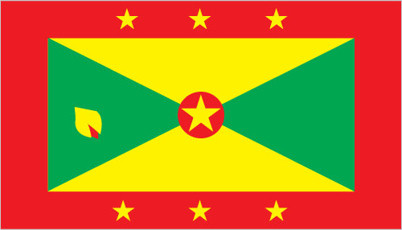
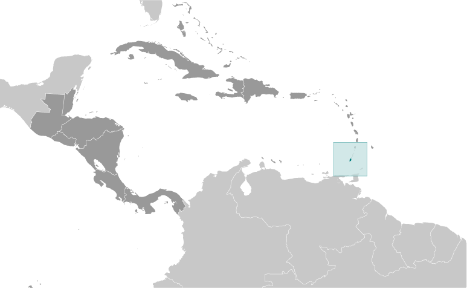
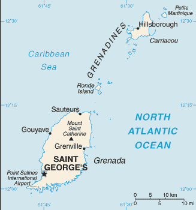

Central America and Caribbean :: GRENADA
Introduction :: GRENADA
-
Carib Indians inhabited Grenada when Christopher COLUMBUS discovered the island in 1498, but it remained uncolonized for more than a century. The French settled Grenada in the 17th century, established sugar estates, and imported large numbers of African slaves. Britain took the island in 1762 and vigorously expanded sugar production. In the 19th century, cacao eventually surpassed sugar as the main export crop; in the 20th century, nutmeg became the leading export. In 1967, Britain gave Grenada autonomy over its internal affairs. Full independence was attained in 1974 making Grenada one of the smallest independent countries in the Western Hemisphere. Grenada was seized by a Marxist military council on 19 October 1983. Six days later the island was invaded by US forces and those of six other Caribbean nations, which quickly captured the ringleaders and their hundreds of Cuban advisers. Free elections were reinstituted the following year and have continued since then.
Geography :: GRENADA
-
Caribbean, island between the Caribbean Sea and Atlantic Ocean, north of Trinidad and Tobago12 07 N, 61 40 WCentral America and the Caribbeantotal: 344 sq kmland: 344 sq kmwater: 0 sq kmcountry comparison to the world: 208twice the size of Washington, DC0 km121 kmterritorial sea: 12 nmexclusive economic zone: 200 nmtropical; tempered by northeast trade windsvolcanic in origin with central mountainsmean elevation: NAelevation extremes: lowest point: Caribbean Sea 0 mhighest point: Mount Saint Catherine 840 mtimber, tropical fruitagricultural land: 32.3%arable land 8.8%; permanent crops 20.6%; permanent pasture 2.9%forest: 50%other: 17.7% (2011 est.)20 sq km (2012)approximately one-third of the population is found in the capital of St. George's; the island's population is concentrated along the coastlies on edge of hurricane belt; hurricane season lasts from June to Novembervolcanism: Mount Saint Catherine (840 m) lies on the island of Grenada; Kick 'em Jenny, an active submarine volcano (seamount) on the Caribbean Sea floor, lies about 8 km north of the island of Grenada; these two volcanoes are at the southern end of the volcanic island arc of the Lesser Antilles that extends up to the Netherlands dependency of Saba in the northdeforestation causing habitat destruction and species loss; coastal erosion and contamination; pollution and sedimentation; inadequate solid waste managementparty to: Biodiversity, Climate Change, Climate Change-Kyoto Protocol, Desertification, Endangered Species, Law of the Sea, Ozone Layer Protection, Whalingsigned, but not ratified: none of the selected agreementsthe administration of the islands of the Grenadines group is divided between Saint Vincent and the Grenadines and Grenada
People and Society :: GRENADA
-
111,724 (July 2017 est.)country comparison to the world: 190noun: Grenadian(s)adjective: GrenadianAfrican descent 82.4%, mixed 13.3%, East Indian 2.2%, other 1.3%, unspecified 0.9% (2011 est.)English (official), French patoisProtestant 49.2% (includes Pentecostal 17.2%, Seventh Day Adventist 13.2%, Anglican 8.5%, Baptist 3.2%, Church of God 2.4%, Evangelical 1.9%, Methodist 1.6%, other 1.2%), Roman Catholic 36%, Jehovah's Witness 1.2%, Rastafarian 1.2%, other 5.5%, none 5.7%, unspecified 1.3% (2011 est.)0-14 years: 23.99% (male 13,914/female 12,893)15-24 years: 15.03% (male 8,377/female 8,414)25-54 years: 40.38% (male 23,099/female 22,013)55-64 years: 10.52% (male 6,016/female 5,740)65 years and over: 10.08% (male 5,210/female 6,048) (2017 est.)total dependency ratio: 50.7youth dependency ratio: 39.9elderly dependency ratio: 10.8potential support ratio: 9.3 (2015 est.)total: 31.5 yearsmale: 31.5 yearsfemale: 31.6 years (2017 est.)country comparison to the world: 1090.44% (2017 est.)country comparison to the world: 16415.5 births/1,000 population (2017 est.)country comparison to the world: 1218.2 deaths/1,000 population (2017 est.)country comparison to the world: 84-2.9 migrant(s)/1,000 population (2017 est.)country comparison to the world: 173approximately one-third of the population is found in the capital of St. George's; the island's population is concentrated along the coasturban population: 35.7% of total population (2017)rate of urbanization: 0.44% annual rate of change (2015-20 est.)SAINT GEORGE'S (capital) 38,000 (2014)at birth: 1.1 male(s)/female0-14 years: 1.08 male(s)/female15-24 years: 0.99 male(s)/female25-54 years: 1.05 male(s)/female55-64 years: 1.05 male(s)/female65 years and over: 0.85 male(s)/femaletotal population: 1.03 male(s)/female (2016 est.)27 deaths/100,000 live births (2015 est.)country comparison to the world: 118total: 9.7 deaths/1,000 live birthsmale: 9.2 deaths/1,000 live birthsfemale: 10.3 deaths/1,000 live births (2017 est.)country comparison to the world: 141total population: 74.5 yearsmale: 71.9 yearsfemale: 77.4 years (2017 est.)country comparison to the world: 1232.02 children born/woman (2017 est.)country comparison to the world: 1176.1% of GDP (2014)country comparison to the world: 1033.5 beds/1,000 population (2012)improved:urban: 99% of populationrural: 95.3% of populationtotal: 96.6% of populationunimproved:urban: 1% of populationrural: 4.7% of populationtotal: 3.4% of population (2015 est.)improved:urban: 97.5% of populationrural: 98.3% of populationtotal: 98% of populationunimproved:urban: 2.5% of populationrural: 1.7% of populationtotal: 2% of population (2015 est.)NANANAnote: active local transmission of Zika virus by Aedes species mosquitoes has been identified in this country (as of August 2016); it poses an important risk (a large number of cases possible) among US citizens if bitten by an infective mosquito; other less common ways to get Zika are through sex, via blood transfusion, or during pregnancy, in which the pregnant woman passes Zika virus to her fetus (2016)21.3% (2016)country comparison to the world: 90total: 17 yearsmale: 17 yearsfemale: 17 years (2015)
Government :: GRENADA
-
conventional long form: noneconventional short form: Grenadaetymology: probably named for the Spanish city of Granada; in Spanish "granada" means "pomegranate"parliamentary democracy (Parliament); a Commonwealth realmname: Saint George'sgeographic coordinates: 12 03 N, 61 45 Wtime difference: UTC-4 (1 hour ahead of Washington, DC, during Standard Time)6 parishes and 1 dependency*; Carriacou and Petite Martinique*, Saint Andrew, Saint David, Saint George, Saint John, Saint Mark, Saint Patrick7 February 1974 (from the UK)Independence Day, 7 February (1974)previous 1967; latest presented 19 December 1973, effective 7 February 1974, suspended 1979 following a revolution, but restored in 1983; amended 1991 (Constitutional Judicature Act, 1991) (2017)common law based on English modelhas not submitted an ICJ jurisdiction declaration; accepts ICCt jurisdictioncitizenship by birth: yescitizenship by descent: yesdual citizenship recognized: yesresidency requirement for naturalization: 7 years for persons from a non-Caribbean state and 4 years for a person from a Caribbean state18 years of age; universalchief of state: Queen ELIZABETH II (since 6 February 1952); represented by Governor General Cecile LA GRENADE (since 7 May 2013)head of government: Prime Minister Keith MITCHELL (since 20 February 2013)cabinet: Cabinet appointed by the governor general on the advice of the prime ministerelections/appointments: the monarchy is hereditary; governor general appointed by the monarch; following legislative elections, the leader of the majority party or majority coalition usually appointed prime minister by the governor generaldescription: bicameral Parliament consists of the Senate (13 seats; members appointed by the governor general - 10 on the advice of the prime minister and 3 on the advice of the opposition party leader; members serve 5-year terms) and the House of Representatives (15 seats; members directly elected in single-seat constituencies by simple majority vote to serve 5-year terms)elections: last held on 19 February 2013 (next to be held in 2018)election results: House of Representatives - percent of vote by party - NNP 58.8%, NDC 40.7%; other 0.5% seats by party - NNP 15highest court(s): the Eastern Caribbean Supreme Court (ECSC) is the superior court of the Organization of Eastern Caribbean States; the ECSC - headquartered on St. Lucia - consists of the Court of Appeal - headed by the chief justice and 4 judges - and the High Court with 18 judges; the Court of Appeal is itinerant, travelling to member states on a schedule to hear appeals from the High Court and subordinate courts; High Court judges reside at the member states with 2 in Grenadajudge selection and term of office: chief justice of Eastern Caribbean Supreme Court appointed by the Her Majesty, Queen ELIZABETH II; other justices and judges appointed by the Judicial and Legal Services Commission, and independent body of judicial officials; Court of Appeal justices appointed for life with mandatory retirement at age 65; High Court judges appointed for life with mandatory retirement at age 62subordinate courts: magistrates' courts; Court of Magisterial AppealsGrenada United Labor Party or GULP [Wilfred HAYES]National Democratic Congress or NDC [Nazim BURKE]New National Party or NNP [Keith MITCHELL]Committee for Human Rights in Grenada or CHRGNew Jewel Movement Support GroupThe British Grenada Friendship SocietyThe New Jewel 19 CommitteeACP, AOSIS, C, Caricom, CDB, CELAC, FAO, G-77, IBRD, ICAO, ICCt (signatory), ICRM, IDA, IFAD, IFC, IFRCS, ILO, IMF, IMO, Interpol, IOC, ITU, ITUC, LAES, MIGA, NAM, OAS, OECS, OPANAL, OPCW, Petrocaribe, UN, UNCTAD, UNESCO, UNIDO, UPU, WHO, WIPO, WTOchief of mission: Ambassador Ethelstan Angus FRIDAY (since 3 September 2013)chancery: 1701 New Hampshire Avenue NW, Washington, DC 20009telephone: [1] (202) 265-2561FAX: [1] (202) 265-2468consulate(s) general: Miamichief of mission: the US does not have an embassy in Grenada; the US Ambassador to Barbados is accredited to Grenadaembassy: Lance-aux-Epines Stretch, Saint George'smailing address: P. O. Box 54, Saint George'stelephone: [1] (473) 444-1173 through 1176FAX: [1] (473) 444-4820a rectangle divided diagonally into yellow triangles (top and bottom) and green triangles (hoist side and outer side), with a red border around the flag; there are seven yellow, five-pointed stars with three centered in the top red border, three centered in the bottom red border, and one on a red disk superimposed at the center of the flag; there is also a symbolic nutmeg pod on the hoist-side triangle (Grenada is the world's second-largest producer of nutmeg, after Indonesia); the seven stars stand for the seven administrative divisions, with the central star denoting the capital, St. George; yellow represents the sun and the warmth of the people, green stands for vegetation and agriculture, and red symbolizes harmony, unity, and courageGrenada dove, Bougainvillea flower; national colors: red, yellow, greenname: "Hail Grenada"lyrics/music: Irva Merle BAPTISTE/Louis Arnold MASANTOnote: adopted 1974
Economy :: GRENADA
-
Grenada relies on tourism as its main source of foreign exchange especially since the construction of an international airport in 1985. Strong performance in construction and manufacturing, together with the development of tourism and higher education - especially in medicine - contributed to growth in national output; however, economic growth remained stagnant in the 2010-14 period, after a sizable contraction in 2009, because of the global economic slowdown's effects on tourism and remittances. Gross national saving – and wealth – has been declining since 2010.Hurricanes Ivan (2004) and Emily (2005) severely damaged the agricultural sector - particularly nutmeg and cocoa cultivation - which had been a key driver of economic growth. Grenada has rebounded from the devastating effects of the hurricanes but is now saddled with the debt burden from the rebuilding process. Public debt-to-GDP is about 110%, leaving the MITCHELL administration limited room to engage in public investments and social spending. MITCHELL in 2013 announced a structural adjustment program that includes a plan to increase tax revenue.$1.524 billion (2016 est.)$1.451 billion (2015 est.)$1.349 billion (2014 est.)note: data are in 2016 dollarscountry comparison to the world: 198$1.056 billion (2016 est.)3.7% (2016 est.)6.4% (2015 est.)7.3% (2014 est.)country comparison to the world: 94$14,200 (2016 est.)$13,700 (2015 est.)$13,000 (2014 est.)note: data are in 2016 dollarscountry comparison to the world: 11317% of GDP (2016 est.)13.9% of GDP (2015 est.)13.8% of GDP (2014 est.)country comparison to the world: 179household consumption: 83.9%government consumption: 14.3%investment in fixed capital: 16.1%investment in inventories: -0.1%exports of goods and services: 19.6%imports of goods and services: -33.9% (2016 est.)agriculture: 9%industry: 14.6%services: 76.5% (2016 est.)bananas, cocoa, nutmeg, mace, citrus, avocados, root crops, sugarcane, corn, vegetablesfood and beverages, textiles, light assembly operations, tourism, construction2% (2016 est.)country comparison to the world: 10959,900 (2013 est.)country comparison to the world: 188agriculture: 11%industry: 20%services: 69% (2008 est.)33.5% (2013)25% (2008)country comparison to the world: 20538% (2008 est.)lowest 10%: NA%highest 10%: NA%revenues: $263.4 millionexpenditures: $271.1 million (2016 est.)25.6% of GDP (2016 est.)country comparison to the world: 115-0.8% of GDP (2016 est.)country comparison to the world: 6284.4% of GDP (2016 est.)91.7% of GDP (2015 est.)country comparison to the world: 30calendar year1.7% (2016 est.)-0.6% (2015 est.)country comparison to the world: 1136.5% (31 December 2009)6.5% (31 December 2008)country comparison to the world: 588.66% (31 December 2016 est.)8.96% (31 December 2015 est.)country comparison to the world: 96$214 million (31 December 2016 est.)$201.1 million (31 December 2015 est.)country comparison to the world: 182$796.7 million (31 December 2016 est.)$786.1 million (31 December 2015 est.)country comparison to the world: 175$566.3 million (31 December 2016 est.)$567.5 million (31 December 2015 est.)country comparison to the world: 173$NA$-34 million (2016 est.)$-203.4 million (2015 est.)country comparison to the world: 84$44.2 million (2016 est.)$43.8 million (2015 est.)country comparison to the world: 206nutmeg, bananas, cocoa, fruit and vegetables, clothing, maceUS 28.4%, Japan 11%, Dominica 7.9%, St. Lucia 7.6%, Netherlands 5.2%, Barbados 4.9%, St. Kitts and Nevis 4.8% (2016)$313.7 million (2016 est.)$310.4 million (2015 est.)country comparison to the world: 199food, manufactured goods, machinery, chemicals, fuelUS 32.7%, Trinidad and Tobago 23.5%, China 6%, Japan 4.6% (2016)$207.7 million (31 December 2016 est.)$198 million (31 December 2015 est.)country comparison to the world: 158$679 million (2013 est.)$538 million (2010 est.)country comparison to the world: 174East Caribbean dollars (XCD) per US dollar -2.7 (2016 est.)2.7 (2015 est.)2.7 (2014 est.)2.7 (2013 est.)2.7 (2012 est.)
Energy :: GRENADA
-
population without electricity: 11,121electrification - total population: 91%electrification - urban areas: 100%electrification - rural areas: 80% (2012)200 million kWh (2015 est.)country comparison to the world: 189185 million kWh (2015 est.)country comparison to the world: 1920 kWh (2016 est.)country comparison to the world: 1420 kWh (2016 est.)country comparison to the world: 15550,000 kW (2015 est.)country comparison to the world: 19198% of total installed capacity (2015 est.)country comparison to the world: 380% of total installed capacity (2015 est.)country comparison to the world: 990% of total installed capacity (2015 est.)country comparison to the world: 1782% of total installed capacity (2015 est.)country comparison to the world: 1210 bbl/day (2016 est.)country comparison to the world: 1420 bbl/day (2014 est.)country comparison to the world: 1300 bbl/day (2014 est.)country comparison to the world: 1340 bbl (1 January 2017 es)country comparison to the world: 1410 bbl/day (2014 est.)country comparison to the world: 1502,300 bbl/day (2015 est.)country comparison to the world: 1920 bbl/day (2014 est.)country comparison to the world: 1602,259 bbl/day (2014 est.)country comparison to the world: 1860 cu m (2013 est.)country comparison to the world: 1410 cu m (2013 est.)country comparison to the world: 1860 cu m (2013 est.)country comparison to the world: 1120 cu m (2013 est.)country comparison to the world: 1310 cu m (1 January 2014 es)country comparison to the world: 145500,000 Mt (2013 est.)country comparison to the world: 185
Communications :: GRENADA
-
total subscriptions: 26,776subscriptions per 100 inhabitants: 24 (July 2016 est.)country comparison to the world: 174total: 118,973subscriptions per 100 inhabitants: 107 (July 2016 est.)country comparison to the world: 186general assessment: adequate, automatic, island-wide telephone systemdomestic: interisland VHF and UHF radiotelephone linksinternational: country code - 1-473; landing point for the East Caribbean Fiber System (ECFS) submarine cable with links to 13 other islands in the eastern Caribbean extending from the British Virgin Islands to Trinidad; SHF radiotelephone links to Trinidad and Tobago and Saint Vincent; VHF and UHF radio links to Trinidad (2015)the Grenada Broadcasting Network, jointly owned by the government and the Caribbean Communications Network of Trinidad and Tobago, operates a TV station and 2 radio stations; multi-channel cable TV subscription service is available; a dozen private radio stations also broadcast (2007).gdtotal: 62,123percent of population: 55.9% (July 2016 est.)country comparison to the world: 183
Transportation :: GRENADA
-
number of registered air carriers: 0inventory of registered aircraft operated by air carriers: 0annual passenger traffic on registered air carriers: 0annual freight traffic on registered air carriers: 0 mt-km (2015)J3 (2016)3 (2013)country comparison to the world: 195total: 32,438 to 3,047 m: 11,524 to 2,437 m: 1under 914 m: 1 (2017)total: 1,127 kmpaved: 687 kmunpaved: 440 km (2001)country comparison to the world: 184major seaport(s): Saint George's
Military and Security :: GRENADA
-
no regular military forces; Royal Grenada Police Force (includes Coast Guard) (2010)
Transnational Issues :: GRENADA
-
nonesmall-scale cannabis cultivation; lesser transshipment point for marijuana and cocaine to US